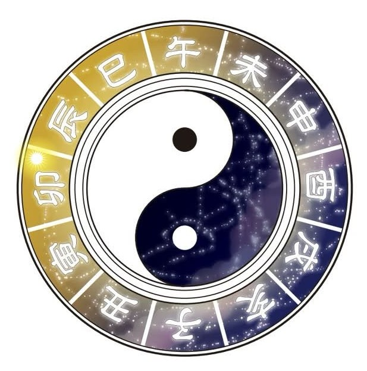

紫微斗數
本の購入ページはこちらから

千年の星命術
あなたの命盤を
読み解く
生年月日と時刻から、紫微斗数の命盤を生成します。
星の配置があなたの本質と運命を映し出します。
命盤を作成する
命盤を作成する
生年月日と出生時刻を入力してください
生年月日
出生時刻
選択してください
子の刻（23:00〜01:00）
丑の刻（01:00〜03:00）
寅の刻（03:00〜05:00）
卯の刻（05:00〜07:00）
辰の刻（07:00〜09:00）
巳の刻（09:00〜11:00）
午の刻（11:00〜13:00）
未の刻（13:00〜15:00）
申の刻（15:00〜17:00）
酉の刻（17:00〜19:00）
戌の刻（19:00〜21:00）
亥の刻（21:00〜23:00）
出生地域
選択してください
出生時刻
性別
男性
女性
命盤を生成する
✦ 命盤結果 ✦